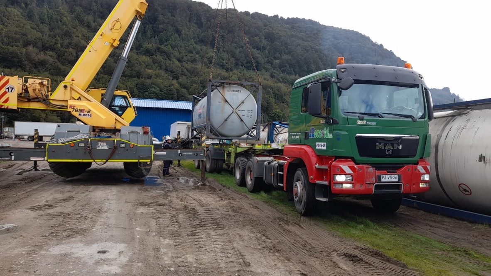
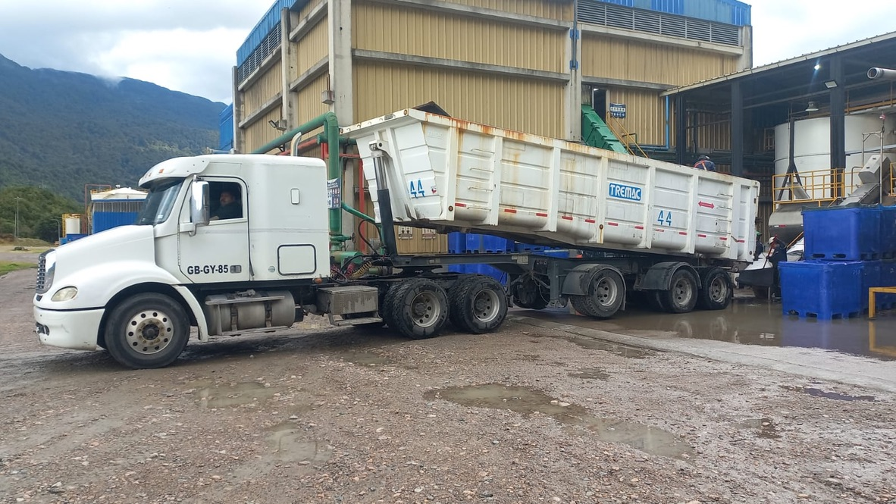
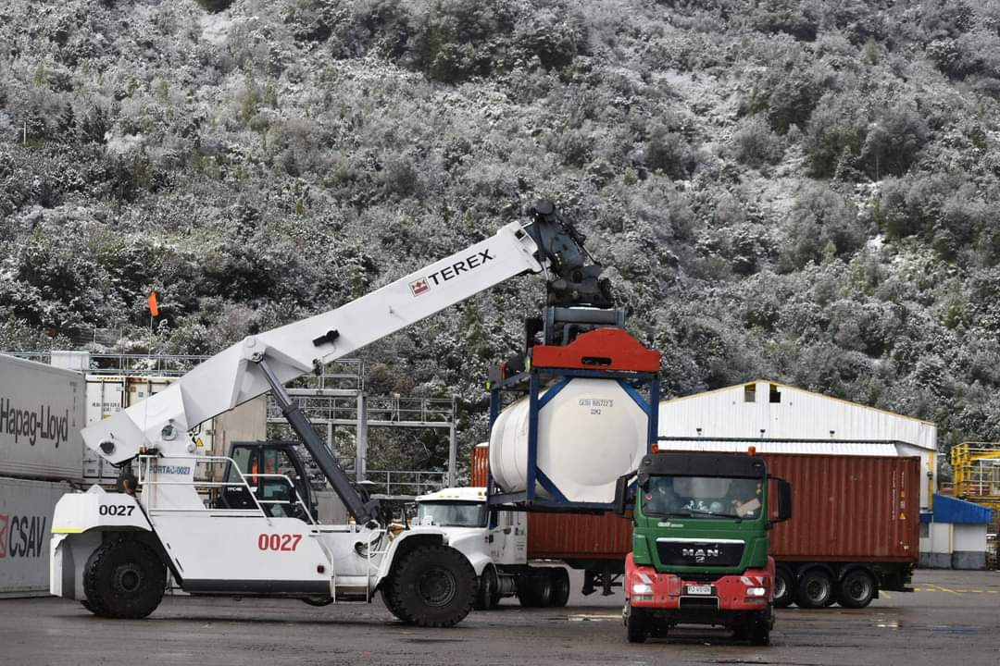

Operaciones en Ruta: Región de Aysén
Estrategia y despliegue logístico en las rutas más desafiantes del sur de Chile.
Cobertura Geográfica
Nuestras operaciones abarcan toda la Carretera Austral, conectando puntos estratégicos entre Puerto Aysén, Coyhaique y Puerto Chacabuco.
Base Operativa
Nuestra base central se ubica en Puerto Aysén, punto neurálgico que nos permite responder con rapidez hacia toda la región.
Mapa Logístico Regional
📍 BASE CENTRAL: PUERTO AYSÉN
🛣️ Ruta 7: Chaitén - Villa O'Higgins
🛣️ Ruta 240: Coyhaique - Puerto Aysén
🛣️ Ruta X-50: Conexión Transversal
Registro de Operaciones

Convoy en Carretera Austral
Despliegue Carga Industrial
Operaciones en Climas Extremos Logística Puerto Chacabuco
Logística Puerto Chacabuco